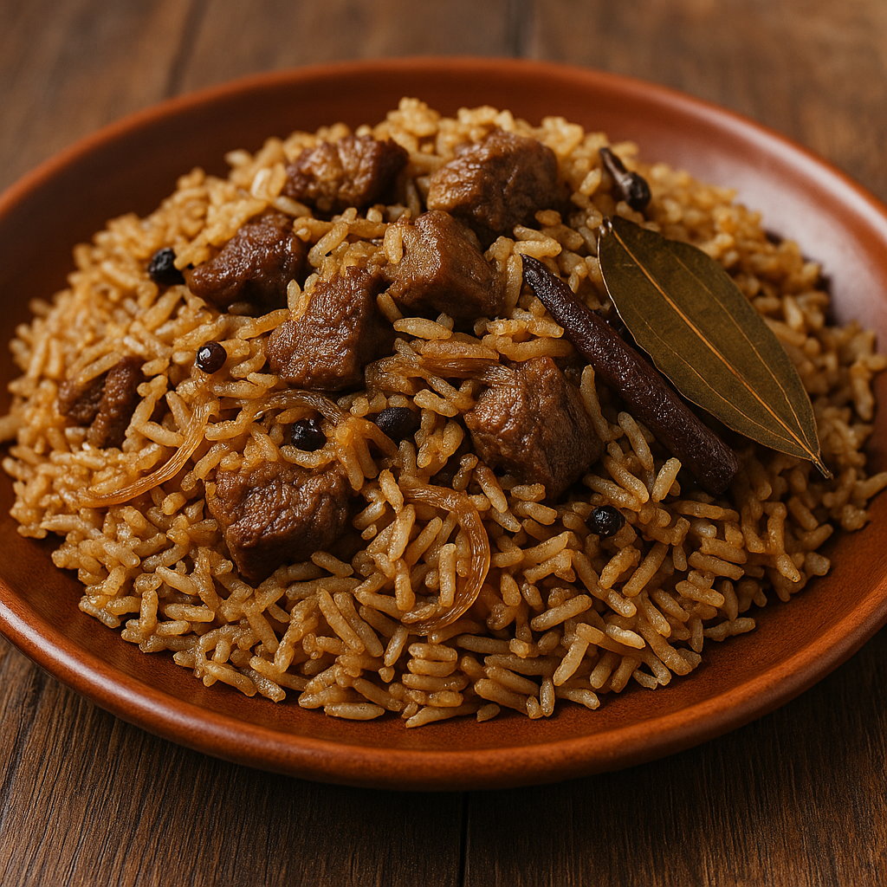

Ingredients
- 1/2 kg of meat (beef or goat)
- Onions (3 large, sliced)
- Pilau masala
- Pilau whole spices (cardamom, cloves, cinnamon, bay leaf)
- Curry powder
- Cumin powder
- 1 kg of rice (basmati)
- Salt to taste
- Cooking oil
- Water
Steps
- Wash and soak the rice for 15–20 minutes.
- In a sufuria (cooking pot), heat oil and add the sliced onions. Cook until golden brown.
- Add the whole spices and stir for a few seconds to release aroma.
- Add meat and cook until browned.
- Add curry powder, cumin powder, and pilau masala. Mix well.
- Add water (about 2 cups for every 1 cup of rice) and let it boil.
- Add soaked rice and salt to taste. Stir once.
- Cover tightly and let it simmer on low heat until all water is absorbed and rice is cooked.
- Turn off the heat, fluff gently with a fork, and serve hot.
Pilau Image
This is what your final pilau dish might look like. 😋